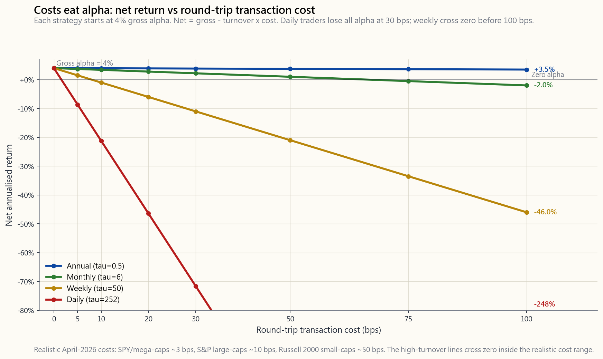
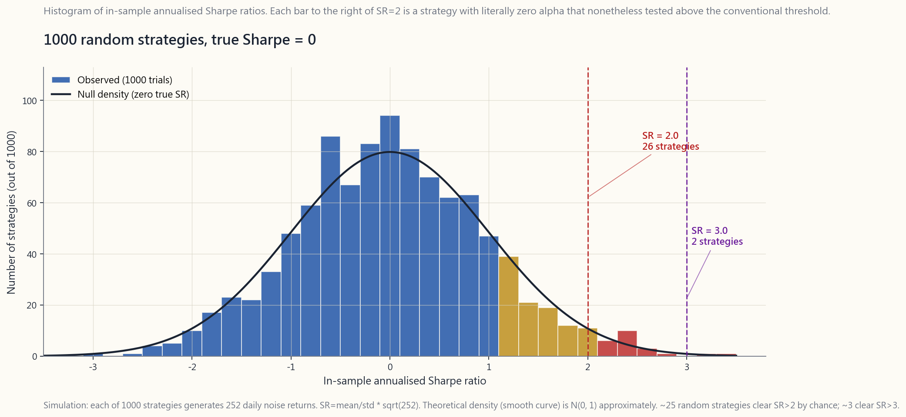

Week 46: Backtesting — Survivorship Bias, Look-Ahead Bias, Transaction Costs, and the Deflated Sharpe
1. Why This Is Important
A backtest is a story you tell yourself about a strategy. It is the most persuasive financial document in the world: a smooth equity curve, a tidy Sharpe number, a table of annual returns, all generated in a few seconds by a program you wrote yesterday. The problem is that almost every backtest is wrong, and almost every backtest is wrong in the same direction — too optimistic. Empirical work by Lopez de Prado, Bailey, and others shows that the median in-sample Sharpe of a published quant strategy roughly halves out of sample. Strategies that look like 1.5 Sharpe machines on paper deliver 0.6 in production, if anything at all. Most retail "systems" sold online deliver zero or negative excess return after realistic frictions.
You need this material for four reasons.
investing life.** Every ETF prospectus, every robo-advisor pitch, every YouTube quant influencer leads with a backtest. If you cannot reflexively spot survivorship bias, look-ahead bias, and the multiple-testing trap, you will mis-allocate capital. Alpha is rare; almost every backtest is selling you alpha. Reconcile.
Bailey and Lopez de Prado's 2014 paper formalised what sceptical practitioners always knew: try a thousand strategies, the best one will look great by chance. Their formula converts a raw in-sample Sharpe into one that explicitly penalises the number of trials. Modern allocators ask for it. You should compute it on your own ideas.
backtested edge of 4% per year, run weekly with 30 bps round-trip costs and ~50 turnovers per year, evaporates: 50 × 0.30% = 15% gross drag, swamping the edge by a factor of three. Most "discoveries" by retail systems live or die on cost modelling — which is why the slick PowerPoints all quietly omit it.
rare. The vol tail wags the dog — a five-year backtest without a crisis is meaningless. Markets stay irrational long enough to stop you out before reverting. And the liquid US equity universe is the one place a sceptical backtester can actually validate point-in-time data without drowning in survivor noise.
This lesson walks through the seven canonical backtest pathologies, the math of the deflated Sharpe, and a working calculator that takes your in-sample number and tells you what to actually expect out of sample.
2. What You Need to Know
2.1 Survivorship Bias — The Universe You Don't See
The simplest, most pernicious bias. Open any data terminal, ask for "all S&P 500 stocks since 1990, equal-weighted, monthly rebalance." Your terminal returns the current S&P 500. Lehman Brothers is missing. Bear Stearns is missing. WorldCom is missing. Sears, Kodak, Polaroid, Wachovia, Washington Mutual, Countrywide — all missing. You have backtested the strategy on a universe of survivors.
Survivorship inflates returns by roughly 1-3% per year on a US large-cap universe, more on small-caps, far more on emerging markets and on hedge fund databases that only list funds still reporting. A "long-only quality" backtest run on the survivors of 1990 looks brilliant. The same strategy run on the actual 1990 universe — including the names that bankrupted — looks mediocre.
The fix is point-in-time index membership. CRSP, Norgate, S&P's IHS-Markit, and Compustat-CapIQ all sell historical constituent files that mark which tickers were in the index on which date. Free data sources rarely have this; if you backtest with a free source, assume your top-line return is overstated by 100-300 bps.
2.2 Look-Ahead Bias — Using Tomorrow's Data Today
Look-ahead bias is when your trading rule on date t uses information that was not actually available on date t. The mechanisms are subtle.
- Restated fundamentals. Compustat shows you AAPL's FY2024
- Index reconstitutions announced before effective. S&P
- End-of-day prices used as fill prices. Your signal fires
- Earnings dates. A reported "EPS surprise" backtest that
The fix is point-in-time data with as-reported timestamps, and a one-day lag rule: any signal computed on date t is acted on at the open of date t+1. Without this rule, expect 2-5% per year of phantom alpha.
2.3 Transaction-Cost Modelling — Where Most Edges Die
For US-listed liquid equities (SPY, QQQ, large caps), realistic all-in round-trip transaction costs in April 2026 are:
| Universe | Round-trip cost (bps) | Notes |
|---|---|---|
| SPY, QQQ, top-50 mega-caps | 1-3 bps | Tight spread + tiny impact |
| S&P 500 large-caps | 5-15 bps | Avg spread ~3 bps + impact |
| Russell 1000 mid-caps | 15-30 bps | Wider spread + slippage |
| Russell 2000 small-caps | 30-80 bps | Spread + impact + sometimes ADV-cap |
| Microcap, OTC, illiquid | 100-300 bps | And you may not get the size you want |
These are all-in: bid-ask spread, market impact, exchange and SEC fees, plus brokerage commissions (now mostly zero for retail in the US). For institutions trading size, market impact dominates and rises roughly with the square root of (order size / ADV).
The arithmetic is brutal. A strategy with annualised gross alpha $\alpha$ and turnover $\tau$ (round-trips per year) and round-trip cost $c$ delivers net alpha:
$$ \alpha_{\text{net}} = \alpha_{\text{gross}} - \tau \cdot c $$
A 4% gross alpha at:
- $\tau = 0.5$ (annual rebalance), $c = 10$ bps → net = 3.95% — costs negligible.
- $\tau = 6$ (monthly), $c = 10$ bps → net = 3.40% — modest drag.
- $\tau = 50$ (weekly), $c = 30$ bps → net = -11% — entire alpha and then some lost.
- $\tau = 252$ (daily), $c = 30$ bps → net = -71.6% — strategy is a furnace.

The diagonal lines fan out from the same starting point on the left. By the time you reach 30 bps round-trip — typical for small-cap US — the daily strategy has lost all of its alpha and then some. This is why most published "high-frequency" retail systems are pure storytelling: they look great in zero-cost simulations and are catastrophic with realistic friction.
2.4 The Multiple-Testing Problem — 1000 Random Strategies
Here is the single most under-appreciated fact in retail quant: **if you try enough strategies, some will look great by chance**. This is not a hypothesis. It is arithmetic.
Suppose you simulate 1000 strategies, each with **zero true edge** — pure noise. Each generates an in-sample annualised Sharpe estimate. Because Sharpe is a noisy estimator (with finite sample size), the distribution of those 1000 estimates is wide. For a one-year window of daily returns, the standard error of the estimated annualised Sharpe is roughly 1.0. So out of 1000 random strategies you should expect, by pure chance:
- ~25 with Sharpe > 2.0 (one-tail probability ~ 2.5%).
- ~160 with Sharpe > 1.0 (~ 16%).
- ~3 with Sharpe > 3.0 (~ 0.3%).

2 by chance, and about 3 clear Sharpe > 3 — none of which are real edges. The chart visualises why "I tried 1000 things and the best one had Sharpe 2.5" is not evidence.">The vertical lines are at Sharpe = 2 and Sharpe = 3. Every bar to the right of those lines is a strategy with **literally zero alpha** that nonetheless tested above the conventional thresholds.
2.5 The Deflated Sharpe Ratio — Bailey & Lopez de Prado
Bailey, Borwein, Lopez de Prado, and Zhu (2014) wrote down a formal correction. The deflated Sharpe ratio (DSR) starts from the observed in-sample Sharpe $\widehat{SR}$, subtracts the expected maximum-of-N null Sharpe, and divides by the distribution-aware standard error of the Sharpe estimator:
$$ \widehat{SR}_0 \approx \sqrt{\frac{2 \ln N}{T}} \quad \text{(expected max under null, large N)} $$
where $N$ is the number of strategy variants tried and $T$ is the sample length in periods.
$$ \text{DSR} = \Phi\!\left(\frac{(\widehat{SR} - \widehat{SR}_0)\sqrt{T-1}}{\sqrt{1 - \gamma_3 \widehat{SR} + \frac{\gamma_4 - 1}{4}\widehat{SR}^2}}\right) $$
Here $\gamma_3$ is skewness and $\gamma_4$ is kurtosis of returns; $\Phi$ is the standard-normal CDF. Read the output as a probability: DSR is the chance that the strategy's true Sharpe is above the multiple-testing-adjusted null. A DSR of 0.95 means 95% confident the strategy is real; 0.50 means a coin flip; 0.30 is "probably noise."
The intuition is simple even if the formula is not: **reporting the best of N tries is like running a one-tailed test at significance level 1/N**. To clear that bar, your raw Sharpe has to beat $\sqrt{2 \ln N / T}$ — and for N = 1000 trials over T = 5 years of daily data, that haircut is roughly $\sqrt{2 \times 6.91 / 1260} \approx 0.10$ on a daily SR, or about 1.66 on an annualised SR. So a researcher reporting Sharpe 2.0 from a 1000-strategy search has, after deflation, an effective Sharpe of roughly 0.34 — barely better than the bond market.
2.6 Walk-Forward Analysis — The Gold Standard
The honest way to validate a strategy is walk-forward: fit parameters on a rolling window, test on the immediately subsequent out-of-sample window, then roll forward. For example: fit on 2010-2014, test 2015; fit on 2011-2015, test 2016; and so on. The concatenation of the test-period returns is your true out-of-sample track record.
Walk-forward kills three birds:
- Look-ahead. You can only fit on data older than the test
- Overfitting. If your strategy needs 12 parameters to look
- Regime drift. A strategy that worked 1995-2005 but failed
A strategy whose walk-forward Sharpe is less than half of its full-sample in-sample Sharpe is overfit. Most published retail systems fail this test on inspection.
2.7 Regime-Shift Robustness
Even after deflation, walk-forward, and proper costs, one final question remains: does the strategy work in different regimes? A momentum strategy that backtests beautifully on 2010-2021 (one long QE-driven uptrend) is not the same as one that backtests across 1929-32, 1973-74, 2000-02, 2008, and 2020 stress windows.
A useful discipline: split your sample into the canonical regime buckets (Week 10's framework) and report Sharpe, drawdown, and hit-rate within each regime. A strategy that works in three of four regimes and fails in one is potentially deployable with a regime overlay. A strategy that only works in one regime is a beta exposure dressed up as alpha. The 1980-2020 regime was anomalous; do not let your sample window inherit its flattering arithmetic.
The interactive at the end of this lesson lets you drag five sliders — in-sample Sharpe, years of backtest, number of strategies tried, round-trip cost, and trades per year — and watch four numbers update live: deflated Sharpe (multiple-testing penalty), out-of-sample Sharpe estimate, Sharpe-after-costs, and the probability the strategy is real. Most "great" backtests collapse instantly under realistic settings.
3. Common Misconceptions
backtest is a best-case simulation under your particular choices of data, costs, and timing. The realised performance is almost always worse — and alpha is rare, so the prior on any backtest is that it is overstated.
is a problem everywhere. Lehman, Bear, WorldCom, Enron, GE removed from the Dow — all large-cap. The bias is universal; it is just larger in noisier universes.
dividend-adjusted prices fix one issue (corporate-action distortion) but tell you nothing about whether the ticker was in the relevant universe at the historical date.
commissions are zero."** Zero commission ≠ zero cost. Spread plus market impact still costs you 5-30 bps round-trip on most US equities, and far more on small-caps. The "commission-free" branding is marketing.
single in/out split is barely better than no split when you chose the split point after seeing the data. Walk-forward is the standard.
you tried more than 20 variants. Multiple-testing correction (Bonferroni, FDR, or DSR) is mandatory.
strategies."* It kills most* strategies, and that is correct. Alpha is rare — the deflation is just that fact in formula form.
Sharpe with fixed sample size and fixed turnover is better, yes. Higher in-sample Sharpe coming from a larger search space is worse — because you tried more.
does not eliminate it. If the underlying strategy class is overfit (e.g., 12 parameters), walk-forward parameters will still flap around and out-of-sample performance will still degrade, just less catastrophically.
perfectly good strategies work only in specific regimes (trend-following in trending markets, value in mean-reverting ones). The honest play is to acknowledge the regime and size accordingly, not to pretend the strategy is all-weather.
4. Q&A Section
Q1. How many strategy variants do I have to declare? A1. Every variation tried — across asset universes, parameter grids, signal definitions, and rebalance frequencies. If you ran a 5×5×4 grid search, $N = 100$. Including the variants you tried and discarded "because they didn't look good" is critical; omitting them is the heart of p-hacking.
Q2. What's a realistic out-of-sample haircut on the in-sample Sharpe? A2. The literature finds the median OOS Sharpe of published quant strategies is roughly 50% of the in-sample Sharpe, and the worst quartile delivers zero or negative. A reasonable working assumption: $\widehat{SR}_{\text{OOS}} \approx 0.5 \times \widehat{SR}_{\text{IS}}$ before costs.
Q3. What round-trip cost should I assume for a Russell 2000 strategy? A3. 30-50 bps for institutional sizing on liquid small-caps. Up to 80-100 bps for the bottom decile of small-caps where ADV is low. Retail traders moving small notional can sometimes do 15-25 bps but cannot scale it.
**Q4. My in-sample Sharpe is 1.5 over 5 years and I tried 200 variants. Is that worth deploying?** A4. Run the deflated Sharpe. With $T \approx 1260$ days and $N = 200$, $\widehat{SR}_0 \approx \sqrt{2 \ln 200 / 1260} \approx 0.092$ on a daily basis, or about 1.46 annualised. So your 1.5 IS Sharpe is essentially the multiple-testing null — DSR will be near 50%. That is a coin flip, not a strategy.
Q5. Why is daily-frequency a graveyard for retail quants? A5. Daily turnover at 252 round-trips per year times even 10 bps cost is 25.2% annualised drag. You need a 25%+ gross edge before you net anything. Arithmetic plus the rarity of alpha: those edges effectively do not exist for retail.
**Q6. How do I get point-in-time fundamental data without paying for Compustat?** A6. Imperfectly. Free EDGAR scraping gets you as-filed financials with proper timestamps, but reconstructing the full universe is painful. Quandl (now Nasdaq Data Link) sells some point-in-time slices at retail prices. For most retail purposes, lag your fundamental data by 90 days as a crude correction.
Q7. Does walk-forward preserve transaction-cost realism? A7. Yes — and it should. The cost model applies inside each walk-forward step exactly as it would in live trading. If anything, walk-forward exposes cost-sensitivity better than full-sample backtests because it reveals turnover changes across parameter refits.
**Q8. My strategy works in bull markets and fails in bear markets. Is it deployable?** A8. Maybe — with a regime overlay. Identify the trigger (e.g., 200-day moving average, VIX threshold) that turns it on and off, and incorporate that switch into the backtest. If the strategy is profitable only with the regime overlay, your "alpha" is partly the overlay's alpha. Be honest about attribution.
**Q9. Should I use bootstrap or block-bootstrap to estimate Sharpe confidence intervals?** A9. Block bootstrap (with block length matched to the auto-correlation of the strategy's returns) is the right tool for serially correlated strategies — most of them. Naïve i.i.d. bootstrap understates the variance.
Q10. What's the simplest defensible backtest workflow? A10. Five steps. (1) Define the strategy in one paragraph before looking at data. (2) Use point-in-time data with a one-day signal-to-execution lag. (3) Apply realistic costs based on the universe. (4) Walk-forward at quarterly or yearly re-fits. (5) Compute deflated Sharpe with honest $N$. If the deflated Sharpe is below ~0.7, do not deploy.
*Q11. Can survivor bias ever flatter a strategy less* than expected?** A11. Rarely, in highly distressed periods where the strategy was specifically betting on the survivors (e.g., long-quality through 2008). Even then, the bias usually rounds in favour of the backtest. Default assumption: survivorship adds 100-300 bps/year.
**Q12. How does Horace size a strategy after passing all of these tests?** A12. Barbell sizing at the L4 sleeve level. A strategy that deflates to a Sharpe of ~1 OOS, with realistic costs and a multi-regime sample, gets a small slice of the *opportunity sleeve* — usually 1-3% of total wealth. If it works, fine. If it does not, the 90%+ core is unaffected. Backtests are not permission to bet large; they are permission to bet some.
第46週：回測 — 倖存者偏差、前瞻偏差、交易成本，以及經調整夏普比率
1. 為何此主題至關重要
回測是你向自己講述的一個關於策略的故事。它是金融世界中最具說服力的文件：一條平滑的資產曲線、一個整齊的夏普比率數字、一張年度回報表——全部由你昨天寫好的程式在幾秒鐘內生成。問題在於，幾乎每一個回測都是錯的，而且幾乎每一個回測都以同一個方向出錯——過度樂觀。Lopez de Prado、Bailey等人的實證研究顯示，已發表的量化策略樣本內夏普比率中位數，在樣本外大約會減半。在紙上看似夏普比率達1.5的策略，實盤交付的往往只有0.6，甚至分文皆無。網上出售的大多數散戶「系統」，在扣除真實摩擦成本後，超額回報為零甚至為負。
你需要掌握這項內容，原因有四。
本節課將逐一拆解七種典型的回測謬誤、經調整夏普比率的數學原理，以及一個實用計算工具——輸入你的樣本內數字，告訴你樣本外的真實預期。
2. 你需要掌握的內容
2.1 倖存者偏差——你看不見的市場
最簡單、也最有害的偏差。打開任何數據終端，查詢「自1990年以來所有標普500成分股、等權重、月度再平衡」。終端返回的是當前的標普500。雷曼兄弟不見了。貝爾斯登不見了。世界通信不見了。西爾斯、柯達、寶麗來、美聯銀行、華盛頓互惠銀行、全國金融公司——全部不見了。你是在一個倖存者組成的市場上進行回測。
倖存者偏差在美國大型股市場上，每年虛增回報約1至3個百分點；在細價股市場更為顯著；在新興市場以及只收錄仍在報告業績的基金的對沖基金數據庫上，則更為嚴重。一個以1990年倖存者為樣本的「純多頭優質股」回測，看起來亮麗非常。同樣的策略若以1990年的真實市場為樣本——包括後來破產的股票——則表現平平。
解決方法是使用即時指數成分股數據。CRSP、Norgate、標普IHS-Markit以及Compustat-CapIQ均提供歷史成分股文件，記錄哪些股票代碼在哪個日期屬於該指數。免費數據來源鮮有此類資料；若你使用免費來源進行回測，請假設你的頂線回報被高估了100至300個基點。
2.2 前瞻偏差——今天使用明天的數據
前瞻偏差是指你在時間點 t 的交易規則中，使用了在時間點 t 實際上並不存在的信息。其機制相當隱蔽。
- 重述後的基本面數據。 Compustat向你顯示的蘋果公司FY2024收入，是經過當前修訂的版本。2025年1月時可查閱的版本——在2025年11月提交的10-K於2026年3月修訂之前——是不同的數字。使用當前版本基本面進行回測，等同於使用了未來數據。
- 指數成分調整在生效前已公告。 標普在調整生效前約5個交易日公告新增成分。若回測使用當前版本數據來確定「某日期是否在指數內」，則會提前一天納入翌日才正式加入的股票。
- 以收市價作為成交價。 你的信號在下午4時觸發，以下午4時的收市價成交。實際情況是你在次日早上才能成交，且對於動量策略而言往往以更差的價格成交，對均值回歸策略則可能以更好的價格成交。成交時機上的前瞻偏差，令動量策略受惠，令均值回歸策略受損。
- 盈利公告日期。 基於「每股盈利驚喜」的回測若使用Compustat當前版本的盈利日期欄位，會在部分公司公告前一天便納入數據，因為該欄位已被事後標準化處理。
2.3 交易成本模型——大多數優勢的消亡之所
對於美國上市的流動性股票（SPY、QQQ、大型股），截至2026年4月，現實的全包來回交易成本如下：
| 市場範疇 | 來回成本（基點） | 備注 |
|---|---|---|
| SPY、QQQ、前50大巨型股 | 1-3個基點 | 差價極窄＋市場衝擊極小 |
| 標普500大型股 | 5-15個基點 | 平均差價約3個基點＋市場衝擊 |
| 羅素1000中型股 | 15-30個基點 | 差價較寬＋滑點 |
| 羅素2000細價股 | 30-80個基點 | 差價＋市場衝擊＋有時受每日成交量上限限制 |
| 微型股、場外交易、非流動性股票 | 100-300個基點 | 且未必能以所需規模成交 |
以上為全包成本：買賣差價、市場衝擊、交易所及美國證券交易委員會手續費，以及經紀佣金（美國散戶現時大多已免佣）。對於大規模交易的機構而言，市場衝擊成本佔主導地位，且大致隨（訂單規模 / 每日平均成交量）的平方根上升。
計算結果殘酷無情。一個年化毛阿爾法為 $\alpha$、換倉頻率為 $\tau$（每年來回次數）、每次來回成本為 $c$ 的策略，其淨阿爾法為：
$$ \alpha_{\text{淨}} = \alpha_{\text{毛}} - \tau \cdot c $$
4%的毛阿爾法在以下情況下：
- $\tau = 0.5$（每年再平衡一次），$c = 10$ 個基點 → 淨值 = 3.95%——成本可忽略不計。
- $\tau = 6$（每月一次），$c = 10$ 個基點 → 淨值 = 3.40%——拖累輕微。
- $\tau = 50$（每週一次），$c = 30$ 個基點 → 淨值 = -11%——阿爾法被完全吞噬，甚至倒虧。
- $\tau = 252$（每日一次），$c = 30$ 個基點 → 淨值 = -71.6%——策略如同一座熔爐，持續焚燒資本。
各條對角線從左側同一起點呈扇形展開。當來回成本達到30個基點——美國細價股的典型水平——時，日度策略已喪失全部阿爾法，甚至大幅虧損。這正是大多數公開銷售的「高頻」散戶系統純屬空談的原因：在零成本模擬下看似出色，加入真實摩擦後則一敗塗地。
2.4 多重測試問題——1000個隨機策略
以下是散戶量化交易中最被低估的事實：若你嘗試足夠多的策略，其中一些看起來出色，純屬偶然。這不是假設，而是純粹的算術。
假設你模擬1000個策略，每個策略的真實優勢為零——純粹噪音。每個策略均生成樣本內年化夏普比率估計值。由於夏普比率是一個有噪聲的估計量（在有限樣本下），這1000個估計值的分佈相當寬廣。對於一年期日線回報窗口，年化夏普比率估計值的標準誤差約為1.0。因此，在1000個隨機策略中，你可以預期純粹由概率產生：
- 約25個夏普比率 > 2.0（單尾概率 ≈ 2.5%）。
- 約160個夏普比率 > 1.0（≈ 16%）。
- 約3個夏普比率 > 3.0（≈ 0.3%）。
垂直線分別位於夏普比率2和3處。這些垂直線右側的每一根柱，都是一個阿爾法為零、卻測試結果超過傳統閾值的策略。
2.5 經調整夏普比率——Bailey與Lopez de Prado
Bailey、Borwein、Lopez de Prado及Zhu（2014年）提出了一個正式修正公式。經調整夏普比率（DSR）從觀測到的樣本內夏普比率 $\widehat{SR}$ 出發，減去零假設下的預期最大夏普比率，再除以夏普估計量的分佈感知標準誤差：
$$ \widehat{SR}_0 \approx \sqrt{\frac{2 \ln N}{T}} \quad \text{（零假設下的預期最大值，適用於大N）} $$
其中 $N$ 為嘗試的策略變體數量，$T$ 為以期數計算的樣本長度。
$$ \text{DSR} = \Phi\!\left(\frac{(\widehat{SR} - \widehat{SR}_0)\sqrt{T-1}}{\sqrt{1 - \gamma_3 \widehat{SR} + \frac{\gamma_4 - 1}{4}\widehat{SR}^2}}\right) $$
其中 $\gamma_3$ 為回報的偏度，$\gamma_4$ 為峰度；$\Phi$ 為標準正態分佈的累積分佈函數。輸出值應解讀為一個概率：DSR是該策略真實夏普比率高於多重測試調整後零假設的置信水平。DSR為0.95表示有95%的把握認為策略真實有效；0.50表示純屬賭博；0.30則意味著「很可能是噪音」。
即便公式複雜，其直覺卻相當簡單：報告N次嘗試中的最佳結果，等同於以顯著性水平1/N進行單尾檢驗。要跨越這個門檻，你的原始夏普比率必須超過 $\sqrt{2 \ln N / T}$——對於在T = 5年日線數據上進行N = 1000次試驗的情況，這個折讓大約為 $\sqrt{2 \times 6.91 / 1260} \approx 0.10$（日度夏普），換算成年化約為1.66。因此，一個研究員從1000次策略搜索中報告的夏普比率2.0，經調整後有效夏普比率約為0.34——僅比債券市場略好一點點。
2.6 滾動前向驗證——黃金標準
驗證策略的誠實方式是滾動前向驗證：在滾動窗口上擬合參數，在緊接其後的樣本外窗口進行測試，然後向前滾動。例如：以2010至2014年擬合，測試2015年；以2011至2015年擬合，測試2016年；以此類推。各測試期回報的拼接，就是你真實的樣本外業績記錄。
滾動前向驗證一石三鳥：
- 前瞻偏差。 你只能以早於測試窗口的數據進行擬合，此乃構造上的保證。
- 過度擬合。 若你的策略需要12個參數才能在樣本內顯得出色，滾動重新擬合將在每個窗口產生截然不同的參數集——這清楚表明這些參數捕捉的並非真實信號。
- 市場環境漂移。 一個在1995至2005年有效、但在2015至2025年失效的策略，將在滾動前向驗證的資產曲線上呈現清晰的斷裂。樸素的全樣本回測則將此斷裂隱藏在平均數之中。
2.7 市場環境穩健性
即便通過了調整、滾動前向驗證和真實成本的重重考驗，最後仍有一個問題有待回答：該策略是否在不同市場環境下均能奏效？ 一個在2010至2021年（一段由量化寬鬆驅動的長期上升趨勢）回測表現亮麗的動量策略，與一個在1929至1932年、1973至1974年、2000至2002年、2008年及2020年壓力時期均通過測試的策略，完全不是同一回事。
一個有用的紀律是：將你的樣本拆分為典型市場環境類別（第10週框架），並分別報告每個環境下的夏普比率、最大回撤和勝率。一個在四個環境中有三個表現良好、一個表現欠佳的策略，若配合環境覆蓋策略，或許仍可部署。一個只在單一環境下有效的策略，不過是包裝成阿爾法的貝塔暴露。1980至2020年的市場環境是異常的；不要讓你的樣本窗口繼承那段時期過於美好的算術。
本課末尾的互動工具，讓你可以拖動五個滑桿——樣本內夏普比率、回測年數、嘗試的策略數量、每次來回成本（基點）及每年交易次數——並實時觀察四個數字的變化：經調整夏普比率（多重測試懲罰後）、樣本外夏普比率估計、扣除成本後夏普比率，以及策略為真實有效的概率。在真實的設定下，大多數「出色」的回測瞬間崩潰。
3. 常見誤解
4. 問答環節
問1. 我需要申報多少個策略變體？ 答1. 所有嘗試過的變體——涵蓋資產市場、參數網格、信號定義及再平衡頻率。若你進行了5×5×4的網格搜索，則 $N = 100$。將那些「因為看起來不好」而捨棄的變體一併納入至關重要；略去它們正是p值操縱的核心所在。
問2. 樣本內夏普比率的樣本外折讓，現實中大約是多少？ 答2. 文獻顯示，已發表量化策略的樣本外夏普比率中位數，約為樣本內夏普比率的50%，最差的四分位數則回報為零或為負。一個合理的工作假設是：$\widehat{SR}_{\text{樣本外}} \approx 0.5 \times \widehat{SR}_{\text{樣本內}}$（扣除成本前）。
問3. 羅素2000策略應假設多少來回成本？ 答3. 機構規模在流動性較好的細價股上，每次來回約30至50個基點。對於每日平均成交量偏低的最底層細價股，可高達80至100個基點。資金量小的散戶有時可做到15至25個基點，但無法擴大規模。
問4. 我的樣本內夏普比率在5年內達到1.5，並嘗試了200個變體。這是否值得部署？ 答4. 請計算經調整夏普比率。以 $T \approx 1260$ 個交易日及 $N = 200$ 計算，$\widehat{SR}_0 \approx \sqrt{2 \ln 200 / 1260} \approx 0.092$（日度），年化約為1.46。因此，你的樣本內夏普比率1.5本質上等同於多重測試的零假設——DSR將接近50%。這是一場賭博，而非一個策略。
問5. 為何日線頻率是散戶量化交易者的墳場？ 答5. 每年252次來回的日線換倉，即便每次成本僅10個基點，年化成本拖累亦高達25.2%。你需要超過25%的毛優勢才能獲得任何淨收益。結合算術與阿爾法的稀缺性：這樣的優勢在散戶可及的流動性股票市場中，實際上並不存在。
問6. 如何在不支付Compustat費用的情況下，獲取即時基本面數據？ 答6. 方法存在，但並不完美。免費的EDGAR抓取工具可獲取帶有適當時間戳的原始申報財務數據，但重建完整市場範疇非常費力。Quandl（現稱Nasdaq Data Link）以散戶價格出售部分即時數據。對於大多數散戶而言，將基本面數據滯後90天作為粗略修正，是較為可行的做法。
問7. 滾動前向驗證是否能保留交易成本的真實性？ 答7. 可以——也應該如此。成本模型應在每個滾動前向驗證步驟內，完全按照實盤交易的方式應用。事實上，滾動前向驗證比全樣本回測更能暴露對成本的敏感性，因為它揭示了不同參數重新擬合窗口之間換倉頻率的變化。
問8. 我的策略在牛市有效，在熊市失效。這個策略是否可以部署？ 答8. 也許可以——但需配合市場環境覆蓋策略。找出觸發條件（例如200日移動平均線、波動率指數閾值）來決定策略的開關，並將此開關納入回測。若策略只有在環境覆蓋的條件下才能盈利，則你的「阿爾法」部分來自覆蓋策略本身。在歸因分析上請保持誠實。
問9. 我應該使用自助法還是分塊自助法來估計夏普比率的置信區間？ 答9. 對於大多數具有序列相關性的策略，分塊自助法（分塊長度與策略回報的自相關性相匹配）是正確的工具。樸素的獨立同分佈自助法會低估方差。
問10. 最簡單且合理可信的回測工作流程是什麼？ 答10. 五個步驟。（1）在查看數據之前，用一段話定義策略。（2）使用即時數據，並在信號計算與執行之間設置一日滯後。（3）根據所在市場範疇應用真實成本。（4）以季度或年度為周期進行滾動前向驗證。（5）以誠實的 $N$ 計算經調整夏普比率。若經調整夏普比率低於約0.7，則不予部署。
問11. 倖存者偏差是否有可能令策略的表現低於預期？ 答11. 罕見，且僅在高度困境時期、策略明確押注倖存者的情況下（例如在2008年做多優質股）。即便如此，偏差通常仍對回測有利。默認假設：倖存者偏差每年虛增100至300個基點。
問12. 陳馬在通過所有這些測試後，如何為策略進行倉位規模管理？ 答12. 採用槓鈴式倉位管理，歸入L4機會組合。一個在扣除成本後樣本外夏普比率約為1的策略，在多個市場環境樣本中均通過驗證，可獲配總資產的一小部分——通常為1至3%。若有效，固然好；若無效，90%以上的核心倉位不受影響。回測是允許投入一部分資金的許可，而非押注重注的理由。
翻譯即將推出……
第46周：回测——幸存者偏差、前瞻偏差、交易成本与缩水夏普比率
1. 为什么这一内容至关重要
回测是你讲给自己听的一个关于策略的故事。它是金融世界中最具说服力的文件：一条平滑的权益曲线、一个整洁的夏普比率数字、一张年度收益表格，全部由你昨天写好的程序在几秒内生成。问题在于，几乎每一个回测都是错的，而且几乎每一个回测都以同样的方向出错——过于乐观。Lopez de Prado、Bailey等人的实证研究表明，已发表量化策略的样本内夏普比率中位数在样本外大约减半。看起来像1.5夏普机器的策略，在实盘中能交付0.6就算不错，甚至毫无建树。网上出售的大多数零售"系统"，在扣除实际摩擦后超额收益为零甚至为负。
你需要掌握这部分内容，原因有四。
本课将逐一梳理七大经典回测缺陷、缩水夏普的数学原理，并提供一个实用计算器——输入你的样本内数字，告诉你样本外实际应该期待什么。
2. 你需要掌握的内容
2.1 幸存者偏差——你看不见的那个市场
最简单、也最有害的偏差。打开任意数据终端，查询"1990年以来标普500全部股票、等权重、按月再平衡"。终端返回的是当前的标普500成分股。雷曼兄弟不在里面。贝尔斯登不在里面。世通公司不在里面。西尔斯、柯达、宝丽来、美联银行、华盛顿互惠银行、全国金融公司——全都不在。你回测的，是幸存者组成的市场。
幸存者偏差在美国大盘股市场中每年虚增约1-3%的收益，在小盘股中更多，在新兴市场以及只收录仍在报告业绩的基金的对冲基金数据库中则高得多。用1990年幸存下来的股票回测"纯多头高质量"策略，结果看起来十分亮眼。但用同一策略回测1990年的实际市场——包括后来破产的名字——结果不过平平无奇。
解决方法是使用时点指数成分数据。CRSP、Norgate、标普旗下的IHS-Markit以及Compustat-CapIQ均出售历史成分文件，记录哪些代码在哪个日期属于该指数。免费数据源鲜有这类数据；如果你用免费数据回测，可以默认你的顶线收益被高估了100-300个基点。
2.2 前瞻偏差——用明天的数据做今天的决策
前瞻偏差是指你的交易规则在t日使用了t日实际上并不可得的信息。其产生机制往往十分隐蔽。
- 经重述的基本面数据。 Compustat向你展示的是苹果公司FY2024营收的当前重述版本。而2025年1月实际可得的版本——在2025年11月提交的10-K于2026年3月修订之前——与之不同。使用当前版次基本面数据进行回测，即是在使用未来数据。
- 指数成分调整在生效前已公告。 标普通常在调整生效前约5个交易日公告新增成分股。使用当前版次数据进行回测时，若以"在t日属于该指数"作为判断标准，就会提前获知明天才会生效的新增信息。
- 以收盘价作为成交价。 你的信号在下午4点触发，以下午4点的收盘价成交。而现实中你是在第二天早上才完成成交，对于动量策略来说通常价格更差，对于均值回归策略来说有时反而更好。成交时机上的前瞻偏差会高估动量策略的表现，并低估均值回归策略的表现。
- 财报日期问题。 使用基于"EPS超预期"信号的回测，若引用Compustat当前的财报日期字段，可能会在公告发布前一天就获取到部分公司的信息，因为该字段已被追溯性地标准化处理。
2.3 交易成本建模——大多数优势在此消亡
对于美国上市的流动性股票（SPY、QQQ、大盘股），截至2026年4月，现实可行的全口径双边交易成本如下：
| 市场范围 | 双边成本（基点） | 备注 |
|---|---|---|
| SPY、QQQ、市值前50名超大盘股 | 1-3个基点 | 买卖价差极小，市场冲击可忽略 |
| 标普500大盘股 | 5-15个基点 | 平均价差约3个基点，加市场冲击 |
| 罗素1000中盘股 | 15-30个基点 | 价差较宽，加滑点 |
| 罗素2000小盘股 | 30-80个基点 | 价差加市场冲击，有时受日均成交量限制 |
| 微型股、场外交易、流动性差的股票 | 100-300个基点 | 且未必能按目标规模成交 |
以上为全口径成本：买卖价差、市场冲击、交易所及SEC费用，加上券商佣金（美国零售端目前基本已免佣）。对于交易规模较大的机构而言，市场冲击是主要成本，大致随（委托量/日均成交量）的平方根增长。
这套算术相当残酷。一个年化毛阿尔法为$\alpha$、换手率为$\tau$（每年双边换手次数）、双边成本为$c$的策略，其净阿尔法为：
$$ \alpha_{\text{净}} = \alpha_{\text{毛}} - \tau \cdot c $$
4%的毛阿尔法，在以下不同情景下：
- $\tau = 0.5$（年度再平衡），$c = 10$个基点 → 净值 = 3.95% — 成本可忽略不计。
- $\tau = 6$（月度换仓），$c = 10$个基点 → 净值 = 3.40% — 小幅拖累。
- $\tau = 50$（周度换仓），$c = 30$个基点 → 净值 = -11% — 阿尔法全部蒸发，且有余。
- $\tau = 252$（日度换仓），$c = 30$个基点 → 净值 = -71.6% — 策略俨然一台熔炉。
这些斜线均从左侧的同一起点发散。当双边成本达到30个基点时——这对美国小盘股来说是常态——日度换仓策略的阿尔法已荡然无存，甚至深陷亏损。这也正是大多数公开发布的"高频"零售系统不过是纸上谈兵的原因：零成本模拟下看起来光鲜亮丽，引入真实摩擦后一败涂地。
2.4 多重检验问题——1000个随机策略
以下是零售量化领域最被低估的事实：如果你尝试的策略足够多，总有几个看起来不错，纯属偶然。这不是假说，而是算术。
假设你模拟了1000个策略，每个策略真实优势为零——纯噪声。每个策略都会生成一个样本内年化夏普比率估计值。由于夏普比率是一个有噪声的估计量（在有限样本下），这1000个估计值的分布相当宽泛。对于一年期的日度收益，年化夏普比率估计值的标准误差约为1.0。因此，在1000个随机策略中，你应该纯粹凭概率期待：
- 约25个夏普比率 > 2.0（单尾概率约2.5%）。
- 约160个夏普比率 > 1.0（约16%）。
- 约3个夏普比率 > 3.0（约0.3%）。
图中竖线分别位于夏普比率=2和夏普比率=3处。竖线右侧的每一个柱体，都是真实阿尔法为零、却依然超过常规阈值的策略。
2.5 缩水夏普比率——Bailey与Lopez de Prado的贡献
Bailey、Borwein、Lopez de Prado与Zhu（2014年）给出了正式的修正公式。缩水夏普比率（DSR）从观测到的样本内夏普$\widehat{SR}$出发，减去零假设下最大夏普的期望值，再除以夏普估计量的分布感知标准误差：
$$ \widehat{SR}_0 \approx \sqrt{\frac{2 \ln N}{T}} \quad \text{（零假设下期望最大值，大N近似）} $$
其中$N$为策略变体的尝试次数，$T$为以期数表示的样本长度。
$$ \text{DSR} = \Phi\!\left(\frac{(\widehat{SR} - \widehat{SR}_0)\sqrt{T-1}}{\sqrt{1 - \gamma_3 \widehat{SR} + \frac{\gamma_4 - 1}{4}\widehat{SR}^2}}\right) $$
其中$\gamma_3$为收益的偏度，$\gamma_4$为峰度；$\Phi$为标准正态分布的累积分布函数。其输出值应理解为概率：DSR是该策略真实夏普高于经多重检验修正后零假设值的概率。DSR为0.95意味着95%的置信度认为策略真实存在；0.50意味着不确定；0.30则意味着"很可能是噪声"。
即使公式复杂，其直觉十分简明：汇报N次尝试中的最优结果，相当于以显著性水平1/N进行单尾检验。要超越这一门槛，你的原始夏普必须高于$\sqrt{2 \ln N / T}$——对于N=1000次试验、T=5年日度数据而言，这一惩罚约为日频夏普0.10，折合年化约为1.66。因此，一个在1000轮策略搜索中汇报夏普2.0的研究者，经修正后的有效夏普约为0.34——仅比债券市场略好一点点。
2.6 滚动向前验证——黄金标准
验证策略最诚实的方式是滚动向前验证：在滚动窗口上拟合参数，在紧随其后的样本外窗口上检验，然后向前滚动。例如：在2010-2014年拟合，在2015年检验；在2011-2015年拟合，在2016年检验；如此循环。将各检验期收益拼接起来，就是你真实的样本外业绩记录。
滚动向前验证能解决三个问题：
- 前瞻偏差。 从构造上就保证了拟合只能使用早于检验窗口的数据。
- 过拟合。 若你的策略需要12个参数才能在样本内表现优异，每次滚动重新拟合都会产生截然不同的参数集——这恰恰说明这些参数并未捕捉到真实信号。
- 结构性变化。 一个在1995-2005年有效、2015-2025年失效的策略，在滚动向前验证的权益曲线上会呈现清晰的断裂。而简单的全样本回测会将这一断裂淹没在平均值中。
2.7 结构性变化稳健性
即便经过缩水修正、滚动向前验证和合理成本处理，最后仍有一个核心问题悬而未决：该策略在不同市场环境下是否有效？ 一个在2010-2021年（一轮由量化宽松驱动的长期上涨行情）回测表现亮眼的动量策略，与一个跨越1929-32年、1973-74年、2000-02年、2008年和2020年多段压力时期验证过的策略，根本不是同一回事。
一个有用的纪律性做法：将样本拆分为第10周框架所定义的典型市场环境区间（牛市平静期、牛市波动期、熊市、复苏期），并分别汇报每个环境下的夏普比率、回撤和胜率。一个在四种环境中三种有效、一种失效的策略，结合环境叠加策略或许可以部署。一个仅在单一环境下有效的策略，本质是被包装成阿尔法的贝塔暴露。1980-2020年的市场环境具有特殊性；不要让你的样本窗口继承那段历史虚假的慷慨。
本课末尾的互动工具允许你拖动五个滑块——样本内夏普、回测年限、尝试策略数量、双边成本和每年交易次数——并实时更新四个数字：缩水夏普（多重检验惩罚后）、样本外夏普估计、扣除成本后的夏普，以及策略真实存在的概率。大多数"出色"的回测，在真实参数下会瞬间崩塌。
3. 常见误解
4. 问答环节
Q1. 我需要申报多少种策略变体？ A1. 所有尝试过的变体——涵盖资产市场范围、参数网格、信号定义和再平衡频率。如果你运行了5×5×4的网格搜索，则$N=100$。关键在于：那些"因为看起来不好"而被放弃的变体同样必须纳入计算；将它们排除在外，正是p-hacking的核心所在。
Q2. 样本内夏普打多少折，才是合理的样本外预期？ A2. 学术文献发现，已发表量化策略的样本外夏普中位数约为样本内夏普的50%，最差的四分之一则带来零收益甚至负收益。一个合理的工作假设是：$\widehat{SR}_{\text{样本外}} \approx 0.5 \times \widehat{SR}_{\text{样本内}}$（扣除成本前）。
Q3. 对于罗素2000策略，应假设多高的双边交易成本？ A3. 机构规模下流动性尚可的小盘股，约为30-50个基点。小盘股中流动性最差的后十分位，可高达80-100个基点。零售投资者交易小额名义金额有时可控制在15-25个基点，但无法规模化。
Q4. 我的样本内夏普为1.5，回测期5年，尝试了200种变体，是否值得部署？ A4. 请运行缩水夏普。在$T \approx 1260$个交易日、$N=200$的条件下，$\widehat{SR}_0 \approx \sqrt{2 \ln 200 / 1260} \approx 0.092$（日频），折合年化约为1.46。因此你的1.5样本内夏普本质上等于多重检验的零假设水平——DSR将接近50%。这是掷硬币，不是一个策略。
Q5. 为什么日频策略是零售量化的坟场？ A5. 日度换仓意味着每年252次双边交易，乘以哪怕仅10个基点的成本，就是年化25.2%的拖累。你需要超过25%的毛优势才能有任何净收益。结合阿尔法的稀缺性，这样的优势在零售层面实际上并不存在。
Q6. 如何在不付费使用Compustat的情况下获取时点基本面数据？ A6. 只能以不完美的方式替代。免费抓取EDGAR可以获取含正确时间戳的原始申报财务数据，但重建完整的市场范围颇为繁琐。Quandl（现为纳斯达克数据链接）以零售价格出售部分时点切片数据。对大多数零售用途而言，将基本面数据滞后90天是一种粗略的替代修正。
Q7. 滚动向前验证能保留交易成本的真实性吗？ A7. 可以——而且应当如此。成本模型在每个滚动向前步骤中的应用方式，与实盘交易中完全一致。事实上，滚动向前验证比全样本回测更能揭示成本敏感性，因为它会在参数重新拟合过程中暴露换手率的变化。
Q8. 我的策略在牛市中有效、熊市中失效，是否可以部署？ A8. 也许可以——配合市场环境叠加策略。识别触发机制（例如200日均线、波动率指数阈值）来控制策略的开启与关闭，并将该开关机制纳入回测。如果策略仅在叠加环境判断后才盈利，那么你的"阿尔法"部分来自该叠加机制本身的阿尔法。请如实归因。
Q9. 估计夏普比率置信区间时，应使用自助法还是块自助法？ A9. 块自助法（块长度与策略收益序列的自相关匹配）适用于大多数具有序列相关性的策略。简单的i.i.d.自助法会低估方差。
Q10. 最简洁且有据可查的回测工作流程是什么？ A10. 五个步骤。（1）在查看数据之前，用一段话定义策略。（2）使用时点数据，信号与执行之间保持一天的滞后。（3）根据所在市场范围应用合理成本。（4）按季度或年度周期进行滚动向前重新拟合。（5）以诚实的$N$计算缩水夏普比率。若缩水夏普低于约0.7，不要部署。
Q11. 幸存者偏差有没有可能反而低估策略表现？ A11. 极少见，仅在策略本身针对幸存者做多的高度困境时期（例如2008年做多高质量股票）偶有出现。即便如此，偏差通常仍倾向于高估回测结果。默认假设：幸存者偏差每年虚增100-300个基点。
Q12. 通过所有这些检验后，陳馬如何对策略进行仓位规模管理？ A12. 采用哑铃式配置，置于L4机会性配置层。一个经缩水修正后样本外夏普约为1、成本合理、样本跨越多个市场环境的策略，在机会性配置部分占据小额仓位——通常为总资产的1-3%。若奏效，自然理想；若不奏效，90%以上的核心组合不受影响。回测不是重仓的许可；它只是小额试水的许可。